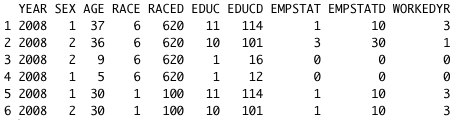
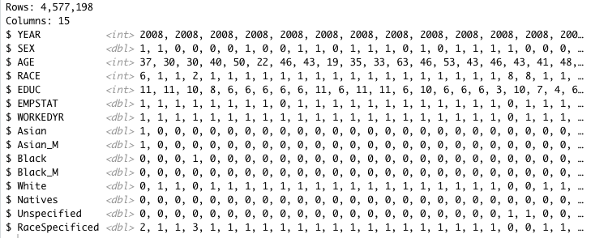
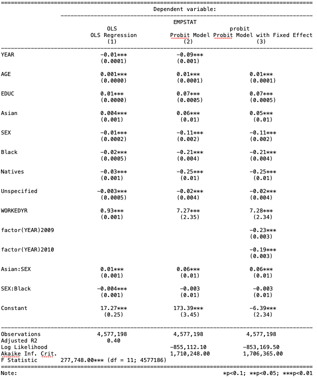
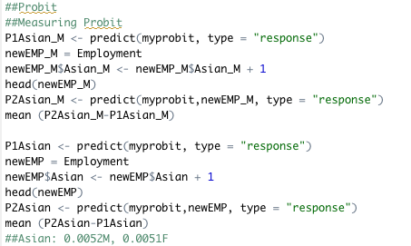

Analysis of Racial Discrimination in Employment

I have gathered data from IPUMS from 2008 to 2010 and from 2017 to 2019. The datasets include variables such as employment, age, gender, race, and education level. I first imported the data into R, then I imported the necessary libraries for graphing and running regressions. 
The data gathered from IPUMS included missing data as well as unnecessary data. For example, "Employment" variable included missing values and those that were not in the labor force. Ethnicities, such as Chinese, Japanese, and Pacific Islanders, were also not aggregated under one category. Therefore, I dropped observations where "Employment" was missing and those that are not in the labor force. I then aggregated multiple ethnicities under one general category of race and generated new interaction variables using variables "Race" and "Gender". 
In the picture below, there are three columns. The first column contains coefficients generated from OLS model, the second column are coefficients from Probit model, lastly, the third column are coefficients from Probit model with fixed effects model. All three models found the same correlation between the dependent variables and the independent variable. However, the magnitude of each differs.
As for the OLS model, I find that Asian men and women are 1.4 percent and 0.4 percent more likely to be hired in comparison to Caucasians. African American men and women are highly likely to be impacted by employment discrimination as they are 2 percent and 2.4 percent less likely to be hired. Native Americans are experiences employment discrimination the most as they are 3 percent less likely to be hired in comparison to their Caucasian counterpart. Lastly, one category (about one year) increase in education increases probability to be hired by 1 percent while if the individual was working the year prior, his/her employment probability increases by 93 percent. While OLS model is very easy to implement, the coefficients generated could be erroneous as binary dependent variable could be above 1 or below 0. Therefore, a Probit model was developed next. 
Unlike OLS models, the coefficients in Probit models cannot be interpreted directly. In order to find the impact of an independent variable on the dependent variable, I first must find their average marginal effect. Average marginal effect shows the change in the dependent variable if a one unit increase is observed in the independent variable while holding all other variables constant. I find that Asian American men and women have an average marginal impact of 0.0052 and 0.0051 respectively. However, the variable Asian Men is an interaction term between the variable Asian and male; therefore, Asian men are 1 percent more likely to be hired while Asian women are 0.5 percent more likely to be hired. African American men and women have an average marginal effect of -0.0002 and -0.024. Similar to Asian men, the variable African American men is also an interaction term between African American and male. Thus, African American men are 2.42 percent less likely to be hired and African American women are 2.4 percent less likely to be hired in comparison to Caucasians. Lastly, Native Americans and individuals of mixed races have average marginal effects of -0.0295 and -0.0017, suggesting Native Americans are nearly three percent less likely to be hired while people of mixed races are about 0.17 percent less likely to be hired. (The image below only shows the process for finding average marginal effect for one variable. The process needs to be repeated for every single independent variables)
